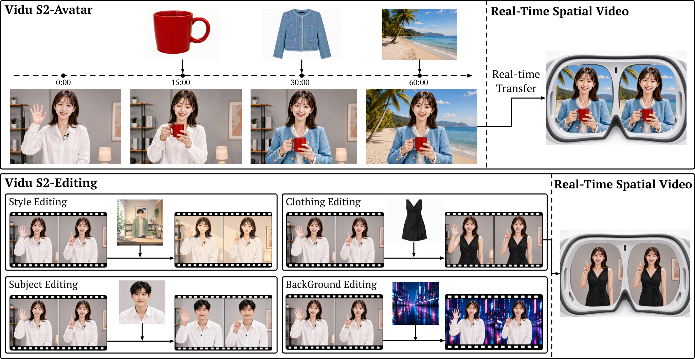
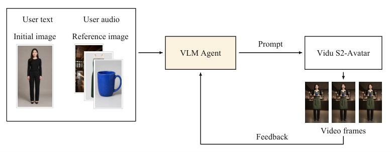
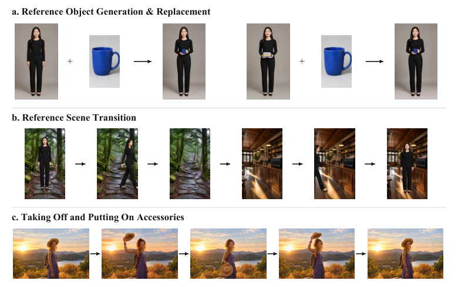

arXiv · September 2026 · Tsinghua University & Shengshu Technology
Vidu S2
Real-Time Interactive, Editable, and Spatial Video Generation. A streaming video system that responds to evolving user instructions, supports live video editing, and explores immersive spatial-video experiences.
Co-author, responsible for the Agentic System in Section 2.4: connecting user inputs, VLM-based prompt planning, avatar generation, and visual feedback into an end-to-end interaction loop.

Close the loop between an instruction and what the video actually shows
The VLM agent interprets text or transcribed speech together with the initial image and optional references. It plans prompts for Vidu S2-Avatar, then reviews generated frames to decide how later prompts should evolve.

Plan the next change
Prompts distinguish appearance, expression, gaze, pose, actions, and held objects, preserving details outside the current request.
Carry state forward
After picking up a cup, a later request to smile should preserve the cup in hand. Subsequent prompts explicitly retain that intended state.
Check before advancing
Frame feedback distinguishes complete, partial, and incorrect actions. Confidence checks and repeated observations govern whether completion is accepted.
Accepted completion shifts the prompt toward the resulting pose or object state. Incomplete actions can trigger revised instructions; uncertain feedback leaves completion unconfirmed.
Update references while preserving a coherent character and scene
The agent identifies whether a new reference describes a handheld object, background, or clothing, then translates it into the requested change. Accessory instructions specify both the movement and the lasting state: removing and replacing a hat ends with the hat remaining worn in subsequent prompts.

Interactive generation, live editing, and spatial experiences
Vidu S2-Avatar
Real-time 720p character generation with references that can change during a stream and support for expressive, full-body motion.
Vidu S2-Editing
Streaming style transfer, virtual try-on, character replacement, and background replacement, guided by instructions and optional references.
Spatial video
Exploration of synchronized left- and right-eye generation and editing for continuously updated, immersive video experiences.
Vidu S2 · arXiv:2609.11638
Jintao Zhang et al. Vidu S2: Real-Time Interactive, Editable, and Spatial Video Generation. Tsinghua University and Shengshu Technology. arXiv preprint, September 10, 2026. Read the paper and full author list →
This page summarizes the public paper, with my contribution centered on its Agentic System section. Figures 1, 3, and 4 are credited to the paper’s authors and reproduced without modification under its Creative Commons Attribution 4.0 license.